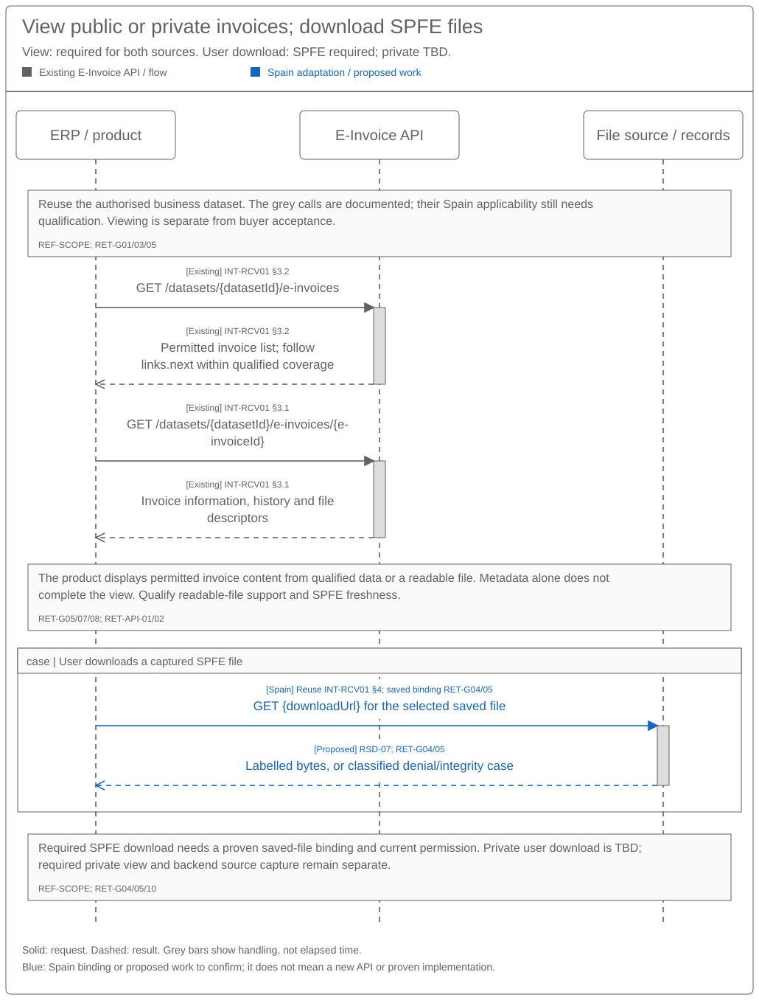

Invoice Retrieval Sequence and Reuse Assessment
Solution summary · Logical specification · API calls and Spain changes
Revision overview
This view assesses the existing E-Invoice API against SPEC016. That predecessor stays unchanged and remains the Confluence source. This review adds the view/download scope decision and SPEC042 call details. The supplied guide was first used for France; it does not prove Spain support. No new endpoint or breaking change is established. REF-SCOPE.
1 Engineering direction and product impact
Reuse existing list/detail calls for the required public and private invoice views. Assess the existing attachment-download pattern for required SPFE user download. Private user download remains a Product decision. Public collection needs its own Spain discovery/download binding; a product-facing GET does not prove that source integration exists. SPEC026 owns required behaviour and the scope decision. INT-RCV01; REF-BASE/PRODUCT/SCOPE.
| Delivery scope | Reuse candidate / Spain work | Product impact / gates |
|---|---|---|
| SPFE required collection, view and user download — Phase 1 | Bind public discovery/download to shared capture; qualify list/detail and safe saved-file access through existing APIs. | Show invoices, file roles, gaps and freshness; allow authorised SPFE file download. Product API applicability and source binding remain RET-G01/03/05/06. |
| Public optional improvements — Phase 1 | Assess refresh acceleration and optional notifications separately from required view/download. | Refresh joins existing work. ZIP export remains outside initial scope. RET-G02/09. |
| External private providers — Phase 2 | View required; user download TBD. Reuse list/detail and qualify provider intake. | A source-file fetch may be needed for intake even while user download remains undecided. Provider rollout needs RET-G01/02/04; the user action needs RET-G10. |
| Sage private-platform offering — Phase 3 | View required; user download TBD. Assess shared view/intake reuse and service-chain coverage. | Confirm operator readiness and actual build/contracts before enablement. RET-G01/04/09/10. |
| Shared processing | Prefer existing records, duplicate handling and inbound DTS mapping. | Keep source access, mapping and product receipt separate. Qualify actual builds/rules. RET-G05/07/09. |
| Optional derived files | Assess format=facturx only if selected. |
Ordinary capture/read does not generate a hybrid. RET-G08. |
2 Proposed reuse sequences
Grey shows documented existing E-Invoice calls. Blue shows proposed Spain binding or a handoff to confirm. Red in SPEC042 marks open evidence. Supplied public SOAP operations are transport evidence; their business formats and running implementation remain unqualified. Arrows show requests and results. A source fetch and a user download are different actions.
2.1 Existing notifications, details and files


This existing guide flow explains notification-led file capture. It does not select private user download or establish a public webhook. Capture is complete only after bytes and evidence are saved consistently. Listing can recover missed notifications within qualified coverage. An error event follows its own action. INT-RCV01 §§1–4; INT-ERR01; RET-G01/02/04.
2.2 Spain public discovery and separate file recovery


Automatic collection discovers by presentation date, downloads separately and saves covered progress after source capture/classification. GetInvoices is an additional identity/status check when needed. A query result cannot stand in for a file. SPFE-S03/S08/S12–15; RSD-03–06.
2.3 Expired links, interrupted capture and stored-file access


Renew a confirmed expired link for the same invoice/file role; other 403 results need their actual reason. Preserve completed files during partial recovery. After capture, a saved-file request checks current permission and reads saved bytes. Its API remains unconfirmed. INT-RCV01 §4; RSD-04/07.
2.4 Required view and SPFE user download


The product lists permitted invoices and opens a selected detail. Rendering a readable document is separate from returning detail metadata. SPFE additionally requires a saved-file download; private user download stays TBD. Qualify whether the existing downloadUrl identifies the captured source and meets Records controls before using it for this action. An absent readable rendering must not relabel XML or an original file as a PDF. REF-SCOPE; RET-G01/04/05/08/10.
3 Existing operations and material contract gaps
SPEC042 owns RET-API-01–05 request/response detail and examples. This table relates the documented calls to reuse gaps; it does not select Spain endpoint availability.
| Existing operation / source | Request → result | Reuse / Spain gap |
|---|---|---|
POST /internal/events/subscriptions — INT-RCV01 §1 |
Event, dataset/source and HTTPS callback scope → subscription (201, labelled 201 OK in guide). |
Confirm access, schema/casing, security, safe replay and subscription lifecycle. RET-G01/02. |
| Received webhook — §2 | Event context; subject identifies invoice; nullable data.errorCode. |
Verify scope/authenticity and map errors before using the ID. Receipt is not file capture. RET-G02. |
GET /datasets/{datasetId}/e-invoices/{e-invoiceId} — §3.1 |
Existing dataset/invoice IDs → details, status/history and attachment downloadUrl. |
Confirm authoritative ID, source-file roles and Spain scope. RET-G01/04. |
GET /datasets/{datasetId}/e-invoices — §3.2 |
Filters/continuation → 20 items/page, links.next, meta.count, meta.hasMore; stated 90-day creation window. |
Qualify inbound selection, date/order semantics and older recovery. RET-G03. |
GET {downloadUrl} — §4 |
Returned temporary URL, no Authorization → bytes; expired URL may return 403. |
Capture promptly; verify content. Re-read details for an expired link. RET-G04/05. |
Detail GET with format=facturx — §§3.1/4 |
Optional format request → generated/returned Factur-X/ZUGFeRD 2.3 Human_Readable attachment. |
Derived file only; assess generation effects and Spain need separately. RET-G08. |
GetRegisteredInvoice / QUERYBYFILTER — SPFE-S03/S15 |
Presentation-date discovery → up to 1000 results, SECUENCE_ID. |
Qualify exact filters/continuation and recipient authority. RET-G06. |
GetInvoices / QUERYBYID — SPFE-S03/S14 |
Up to 1000 identifiers → identity/final-status metadata. | Consultation, not general date discovery or file capture. RET-G06. |
DownloadInvoicesByLOC / DOWNLOADBYLOC — SPFE-S03/S13 |
Qualified locator → files/results; catalogue’s preferred recovery route. | Confirm recipient representation and locator binding. No LOC batch limit inferred. RET-G06. |
DownloadInvoicesByID / DOWNLOADBYID — SPFE-S03/S12 |
ApplicationResponse document references, up to 100 invoices → per-item results. |
Qualify exact identity, envelope and partial-failure handling. RET-G06. |
3.1 Query coverage and recovery
The list can contain sent and received documents. Confirm inbound/self-billing selection; AP/AR names do not establish Spain mappings. Prove time boundaries, links.next scope, stable ordering, late arrivals and crash recovery before saving progress. The example-only currentStatus/createdAt filter is absent from the filter table. INT-RCV01 §3.2; RET-G01/03.
The 90-day creation window is neither retention nor complete history. Missing older coverage stays visible. No polling cadence/quota is supplied; honour valid Retry-After on 429. Read/acknowledgement side effects and bounded retry remain qualification gates. RET-G02/03/06/09.
3.2 Identity, files, formats and source conflicts
| Contract issue | Required decision / consequence |
|---|---|
| Dataset, invoice and event IDs | Confirm represented business, partner, environment and historical route. Resolve data.id versus data.attributes.eInvoiceId; erpInvoiceId is not a universal deduplication key. RET-G01/02. |
| Subscription casing/security | Resolve Data/Type/Attributes/Scope versus lowercase examples, opaqueToken/opaquetoken, and subscription versus notification event names. Use one selected schema. RET-G02. |
| Attachment roles | Preserve Undefined, UBL, Human_Readable, Original_Document. UBL derived from Factur-X is not automatically the exchanged original. RET-G04. |
| Spain format and identity | Qualify public UBL 2.5, rectification, CopyIndicator and seller/number/date identity. Do not relabel example UBL 2.1; resolve ProfileID against final Annex I BT-23. SPFE-S02/S08/S09; RET-G06/07. |
| Extracted values | Tax totals/breakdowns are absent from the guide’s extracted response. Use the qualified structured file and assess existing DTS inbound mapping, tax/extension meaning and async result binding. RET-G07. |
3.3 Shared access, file safety and records
Check current client/action authority on source calls, link renewal and saved reads. Keep temporary URLs out of saved records, logs and events; do not forward Sage bearer tokens to file hosts. Qualify allowed destinations/redirects and verify file role, content, size/type and integrity. RET-G01/04/05.
Renewal does not prove immutable content. Stable attachment identity/version/hash and range/resume are missing from the guide. Partial files remain incomplete. Saved reads use qualified records permissions, retention/holds and historical access; missing/corrupt content opens a records incident. Ordinary reads do not refetch, generate Factur-X or create buyer acceptance. RSD-04/07/09; RET-G04/05/08.
3.4 Private-platform download boundary
A provider notification/reference requires the provider’s qualified file download. Complete supplied bytes avoid another provider fetch. The product-facing detail/downloadUrl flow does not prove how Sage obtained those bytes from B2B Router or another provider. Qualify provider file roles, original provenance, authority, renewal, acknowledgement and history separately. PRI-03; RRI-A01–03; REF-PRIVATE; RET-G01/04/05.
3.5 FR attempt errors and lifecycle separation
Use data.attributes.history[].operationStatus and history[].errorCode for the relevant attempt; currentStatus has neither. Preserve IN_PROGRESS, COMPLETED, ERROR and required data.meta; do not assume history ordering. INT-ERR01.
| Error situation / examples | Required handling |
|---|---|
Notification failure — ERR-RECEIVING-DOC-001 |
Observe the platform-owned retry/support path. Do not recapture to generate another notification. |
Missing key / duplicate — ERR-RECEIVING-DOC-002, ERR-RECEIVING-NOT-25 |
Qualify key ownership; check the existing transaction and file results. Do not invent an idempotency header for GET or a new invoice POST. |
Configuration/verification — ERR-RECEIVING-NOT-001, -007, -008 |
Correct the named problem or use support; do not treat it as generic safe retry. |
Retrieval, creation, attachment or delivery failure — -003, -006, -009, -010, -016, -019 |
Follow platform retry ownership and preserve completed stages. -016 concerns a lifecycle document, not original-invoice capture. |
| Unknown/unused code or exhausted policy | Keep exact safe evidence and an owner; never default to success. -014/-020 are unused; -011 describes a temporary workaround, not DTS build proof. |
The source dictionary retains all 45 codes, including unpadded ERR-RECEIVING-NOT-22–-25. A final ERROR ends that attempt; later retries need separate correlation. Code-specific six-day support guidance is not a Spain legal deadline. Receiving errors cannot create payment/rejection/cancellation reports; SPEC029 owns Annex II. INT-ERR01; SPFE-S22.
3.6 Who sends what and what comes back
| Caller → receiver | Request / result kept | Qualification / scope |
|---|---|---|
| ERP/product → E-Invoice API | RET-API-01/02: authorised datasetId, inbound/source filters and selected invoice ID → list/detail information, file roles and history. Keep returned invoice identity and source context. |
Required view for public/private; confirm Spain support, inbound selection and business/dataset mapping. RET-G01/03. |
| E-Invoice Service → SPFE | RET-SPFE-01/02: recipient role, qualified presentation-date filters or invoice identities → discovery/status metadata and continuation evidence. | Required public collection; exact filter encoding and continuation remain RET-G06. Metadata is not a file. |
| E-Invoice Service → SPFE | RET-SPFE-03/04: qualified locator or invoice references → source invoices and distinct failed-item results. | Required source capture; preserve operation, item identity and exact bytes. RET-G04/06. |
| Product/file consumer → file source | RET-API-03: returned temporary URL → file bytes, or a classified refusal. | Candidate for required SPFE user download only after saved-source binding passes RET-G04/05. Private user download remains RET-G10. |
| E-Invoice Service / private integration → provider | Selected notification/fetch or supplied-file contract → verified source capture and intake result. | Required private view needs qualified intake. Exact provider contract and transfer mode remain RET-G01/04; product download is a separate decision. |
| Product → view/records capability — proposed | Current client/invoice/file context → readable information or permitted saved bytes, with access result. | Identify existing implementation first. No new view, render or saved-read endpoint is established. RET-G05/08/09. |
4 Open engineering decisions
| Gate / owner | Evidence required before enabling the affected capability |
|---|---|
| RET-G01 — API, Identity, Routing, Product/Compliance | Business/dataset/partner mapping, service/environment support and current/historical action authority. RRI-Q01–03; RCV-Q02/12. |
| RET-G02 — API, Events, Security, Integration | Selected schemas/casing, authentication, event/attempt IDs, replay, errors, subscription lifecycle and read/acknowledgement effects. RCV-Q01/05. |
| RET-G03 — API, Retrieval, Operations | Inbound/date selection, pagination, stable progress, late/older history and visible gap recovery. RSD-G01/06/07. |
| RET-G04 — Integration/provider, Records, Security | Exact source/file roles, content binding, link renewal, partial/required file sets and safe transfer. RCV-Q01/03. |
| RET-G05 — Records, Product, Compliance | Existing view/saved-read contracts and builds, source/file-role binding, current permission, integrity, retention/holds, restore/export and historical access beyond the list window. RSD-G03/04; RCV-Q06. |
| RET-G06 — Spain connector, API, Identity/Compliance | Public filters/MessageProperties, SECUENCE_ID, LOC/ID/NIU encoding, authority, read effects and pending business formats. SPFE-Q06/09/12–14/17. |
| RET-G07 — DTS, Validation, Receiving/Product | Actual inbound build/mapping, Spain profile/rectification/copy rules, tax/extensions, async results, country isolation and support. RSD-G08; RCV-Q03/04/07/09. |
| RET-G08 — Product, API, Format/Records | Qualified product display/readable representations for required public/private view; need and contract for optional Factur-X generation. Confirm unavailable/unsupported renderings, access, concurrency and derived-file provenance. RRI-Q02; RCV-Q06. |
| RET-G09 — Receiving, Product, Operations | Durable capture/classification, product receipts, retry limits/escalation, per-client work, measured targets, build/run owner and existing-country regression. RCV-Q08/11/13; RRI-Q03. |
| RET-G10 — Product, Compliance, Records, provider integration | Decide private user download scope: providers/phases, intended use, file roles, permissions and conservation-access implications. Keep required private view and backend source acquisition independent. RRI-Q02; REF-SCOPE. |
For each reuse candidate, identify the actual capability/build, Spain changes, owner and proof. A reusable pattern is not evidence that production code supports it. SPEC026 recovery defines the safe outcomes.
5 API qualification checks
These checks supplement SPEC026; none is claimed as executed implementation testing.
| Check | Required proof / functional link |
|---|---|
| RET-API-A01 | Wrong business/dataset/country/environment and revoked grants are denied on calls, renewal and saved reads. RSD-A01/08/13; RRI-A07/08; SPFE-S02 Article 11. |
| RET-API-A02 | Authenticate/error-check webhooks; recover duplicates, reordering, missed events and lost subscription responses. Verify receipt/attempt meaning. RRI-A02/04/09; RCV-A20. |
| RET-API-A03 | Over 20 items, mixed directions, date boundaries, repeated pages, concurrent arrivals, crashes and older-than-90-day work retain complete or visibly incomplete coverage. RSD-A03/07/10; RRI-A04. |
| RET-API-A04 | Notification-only versus supplied-file modes, missing/expired/refused/partial files, safe renewal and required/optional sets preserve good files and source identity. No bearer forwarding or unsafe access. RRI-A01–03/06; RSD-A06/09/14. |
| RET-API-A05 | Safe saved reads survive mapping/product failure, holds and provider changes; no refetch or silent disposal. RSD-A04/11; RRI-A05/08; RCV-A23/24. |
| RET-API-A06 | Public date discovery, continuation and separate LOC/ID downloads handle authority/partial failure and possible read effects. SPFE-S03/S08/S12–15; RSD-SPFE-A01–03; RSD-A16. |
| RET-API-A07 | Actual inbound DTS, copy equivalence, tax precision, corrections/extensions and source/version-bound async results pass country-isolated checks. No technical error creates a business report. RCV-A13/16–18/22; RRI-A10. |
| RET-API-A08 | Ordinary reads do not generate hybrids; optional generation preserves source, access, provenance and independent failure. RRI-A06/07; RCV-I05. |
| RET-API-A09 | Crash/lost receipt, notification failure after capture, duplicate transaction and platform retries cannot duplicate invoices or repeat good files. Stop exhausted retries with an owned unresolved case. RCV-A14/15/28/31; RSD-A02; INT-ERR01. |
| RET-API-A10 | Required public/private list/detail view enforces client/invoice permission and distinguishes source/file roles. Missing content stays visibly incomplete. SPFE shows freshness and offers authorised saved-file download during mapping/product failure. Private user download stays TBD without blocking view or intake. No view creates buyer acceptance. SPEC026 §2/§6; REF-SCOPE. |
REF Source references
| REF ID | Original source and version/date | Exact location | Supported claim and limit |
|---|---|---|---|
| REF-SCOPE | SPEC026 scope decision, user direction and clarification, 30 October 2026 | Source/phase table; REF-SCOPE/REF-PHASE | Public/private view required, SPFE user download required, private user download TBD. Phase labels and scope decisions do not prove implementation support. |
| REF-API | SPEC042, draft, 30 October 2026 | RET-API-01–05, RET-SPFE-01–04 and REF | Detailed source-backed call analysis and proposed Spain reuse; not an approved new contract. |
| REF-BASE | SPEC-SEI-016, updated 20 October 2026 | Parts 2–4; PRI/RSD/RCV contracts, data and gates | Proposed shared controls and inherited IDs; not a deployed physical API. |
| REF-PRODUCT | PRD-SEI-211, updated 20 October 2026; PRD-SEI-223, updated 7 October 2026; PRD-SEI-227 | PRD211 FR1–55/Phase 1; PRD223 receiving FR17–20 and DTS FR43–44; shared-country direction | Canonical product sources with their recorded status; no API compatibility or runtime guarantee. |
| REF-PRIVATE | PRD-SEI-216 B2B Router integration, repository baseline reviewed 22 October 2026 | FR26–30, AC10 and evidence E3/E5/E6 limits | Private received-invoice discovery, legal-document/attachment retrieval and original capture requirements. Provider endpoint, file-delivery mode and Spain contract fitness remain unqualified; this is not a fresh verification of the provider's live API. |
| INT-RCV01 | Selective extract of supplied FR receiving guide, received 22 October 2026, revision unknown | §1 subscription; §2 event; §3.1 detail; §3.2 list/filter; §4 file download; Polling | Guide facts and conflicts. Original attachment hash recorded in extract. OpenAPI, original page URL, full event/status/error contracts and build were not supplied. No Spain support established. |
| INT-ERR01 | FR error-handling extract, received 22 October 2026, revision/build unknown | Processing and error fields; ERR-RECEIVING-DOC, ERR-RECEIVING-NOT, Recovery interpretation |
Concrete history-only outcomes, 45 exact source codes and code-specific platform retry/support actions. Does not establish retry mechanics, runtime topology or Spain support. |
| SPFE-S22 | Separate Annex II, filename date 21 October 2026, supplied 22 October; no verified release version | §§1–4 pp. 4–14; L1 p. 15 | Eight lifecycle message types, actor roles and field cardinalities. Final BOE Annex II remains legal baseline; no retrieval endpoint/error dictionary or proven supersession. |
| SPFE-S02 | BOE-A-2026-20587.pdf, final Order HAC/1028/2026, published 5 October 2026 | Article 6; Articles 9–11, PDF pp. 8–11; Annex I BT-23/24 | Public invoice identity, recovery/conservation and third-party representation; final profile baseline. Not the missing wire filter or provider API contract. |
| SPFE-S03 | CatalogoServicios.pdf, 0.1.0, 9 October 2026 | §§6.4–6.7, pp. 12–15 | QUERYBYID/QUERYBYFILTER, presentation date, SECUENCE_ID, ID limits, LOC preference and authority branches. Exact encoding/ordering/recipient-authority reconciliation remain open. |
| SPFE-S08 | FormatosEntradaSalida.pdf, 0.1.0, 9 October 2026, BORRADOR | §5.1.1 p. 8; §§5.4–5.7 pp. 14–15 | UBL 2.5 business documents; query/download business formats marked pending. Transport inventory does not complete them. |
| SPFE-S09 | factura.xml, supplied 13 October 2026 | cbc:ProfileID, cbc:CustomizationID, cbc:CopyIndicator |
Exact example values and conflict with final Annex I BT-23. Not a complete faithful-copy or activated profile contract. |
| SPFE-S12 | DownloadInvoicesByID.wsdl, PRE release 29 October 2026 | DownloadInvoicesByID portType/binding, PartInfo/MIME documentation and service ports |
Exact operation/PRE transport. Does not close pending business formats or prove live acceptance. |
| SPFE-S13 | DownloadInvoicesByLOC.wsdl, PRE release 29 October 2026 | DownloadInvoicesByLOC portType/binding, PartInfo/MIME documentation and service ports |
Locator-download PRE transport; no inferred production address, LOC batch size or recipient authority. |
| SPFE-S14 | GetInvoices.wsdl, PRE release 29 October 2026 | GetInvoices operation/binding/service ports |
Identity-query PRE transport; opaque MIME attachments do not supply a complete business schema. |
| SPFE-S15 | GetRegisteredInvoice.wsdl, PRE release 29 October 2026 | Singular GetRegisteredInvoice operation; header-only WSDL messages, attachment documentation and service ports |
Exact transport/name. Qualify catalogue MessageProperties filters and continuation semantics; the current WSDL no longer declares a generic payload part. See SPEC-SEI-011 PCN-SPFE-R02/R03 for current transport rules. |
| REF-TERMS | Shared glossary; onboarding reuse assessment, draft, updated 29 October 2026 | View/acquisition/download and dataset/account/address terms; onboarding GAP-01/02/06 | Identity and action terminology; current SXS/platform mapping gates. No assumption of one proven dataset per legal entity or new authority. |
| REF-EVIDENCE | RES-SEI-002; source manifest | Original-file inventory/hashes; SPFE-Q06/Q09/Q12–14/Q17 | Reading aid and unresolved source gates. Inventory or extract completeness does not prove mappings or implementation readiness. |